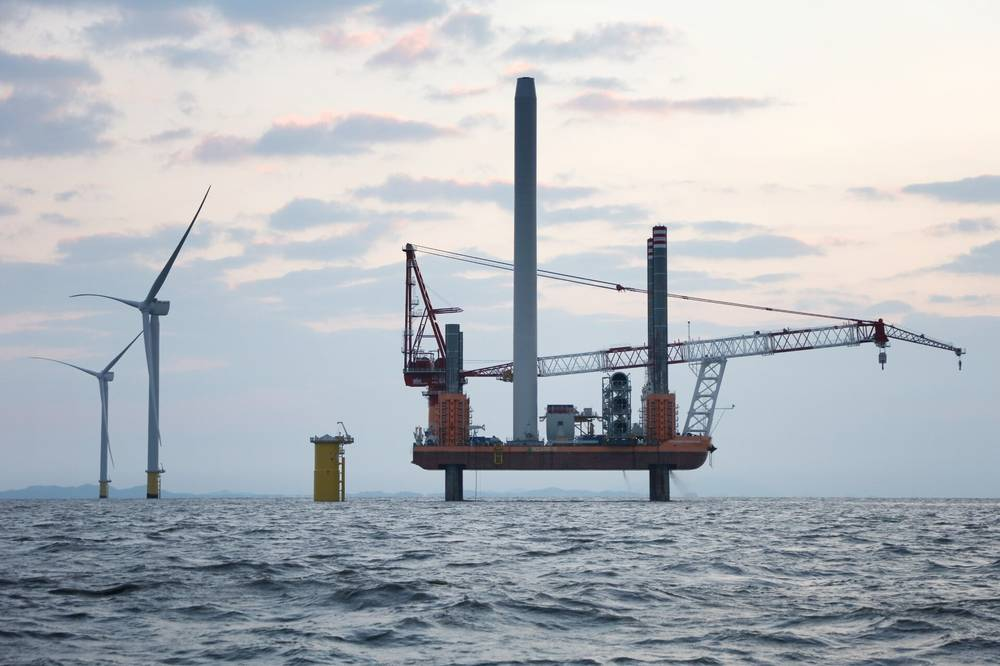

이순형 동신대 교수, 전남광주 재생에너지 50GW 일감 지역 기업에 돌리자 제안

투자 250조 원 추산하며 발주 시간표·공동도급·인력 양성 주문…산업부는 호남 주요 전력망 확충을 2031년 이후로 설명
이순형 동신대학교 전기공학과 특임교수가 전남광주특별시의 재생에너지 확대 공사를 지역 기업의 일감으로 돌려야 한다고 기고에서 제안했다. 이 교수는 반도체 클러스터 공사가 계열 건설사 중심이라 지역 몫이 작다고 보며, 지난해 전문건설 실적이 광주 18%, 옛 전남 15% 줄었다는 대한전문건설협회 집계를 들었다.
이 교수가 내놓은 목표는 현재 약 7GW(1GW는 1,000MW)인 지역 설비에 2030년까지 태양광 약 10GW, 2035년까지 해상풍력 30GW, 2038년까지 부유식 풍력 10GW를 더하는 것이다. 투자 추산은 250조 원 안팎이며, 근거인 신안 해상풍력 집적화단지(3.2GW, 민자 20조 원)는 정부 재정이 아닌 개별 사업자 투자로 지어진다고 산업통상자원부가 2025년 4월 24일 밝혔다.
제안은 연도별 발주 시간표 공개, 공공 주도 발전·계통·항만 공사의 지역 공동도급 확대, 지역 대학·직업학교의 전기·용접·해상 인력 양성 세 가지다. 추진 주체로는 특별시가 에너지공사를 서둘러 세워 공공 지분으로 참여하고 발주자 역할을 맡아야 한다고 주장했다. 산업부는 같은 자료에서 호남의 전력계통 사정이 어렵지만 10차 송변전설비계획(2023년 5월)에 따라 2031년 이후부터 주요 전력망이 확충될 예정이라고 설명했다.
출처: 디딤코리아(제이앤앤뉴스 제공) 2026-11-14 이순형(동신대 전기공학과 특임교수, 기고)·등록 박송엽 원문 보기
출처: 산업통상자원부 2025-04-24 보도설명자료 「전남 신안 해상풍력 집적화단지는 규정된 절차에 따라, 전력계통 등을 고려하여 지정되었습니다」 원문 보기